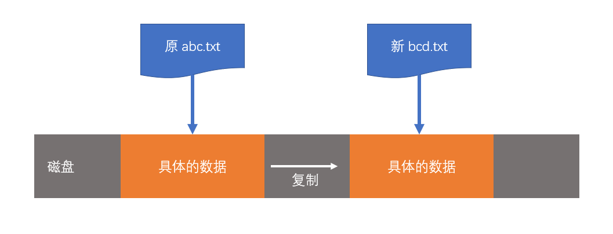
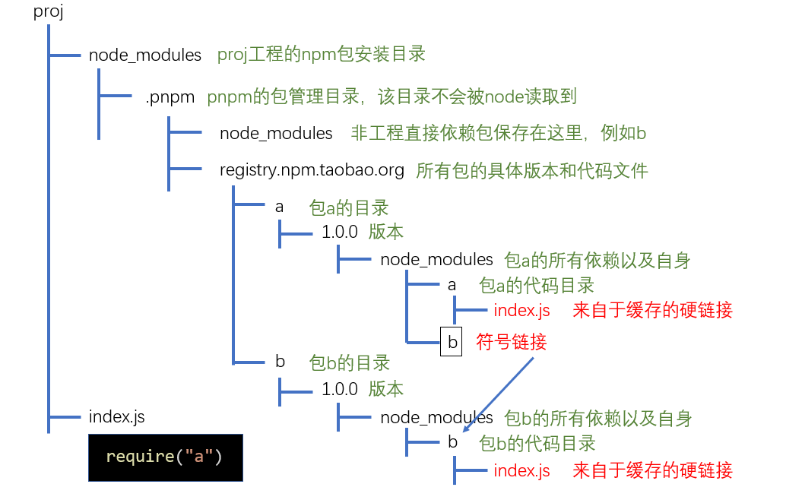

一、cnpm
为解决国内用户连接npm registry缓慢的问题，淘宝搭建了自己的registry，即淘宝npm镜像源
过去，npm没有提供修改registry的功能，因此，淘宝提供了一个CLI工具即cnpm，它支持除了
npm publish以外的所有命令，只不过连接的是淘宝镜像源如今，npm已经支持修改registry了，可能cnpm唯一的作用就是和npm共存，即如果要使用官方源，则使用npm，如果使用淘宝源，则使用cnpm
二、nvm
nvm并非包管理器，它是用于管理多个node版本的工具
在实际的开发中，可能会出现多个项目分别使用的是不同的node版本，在这种场景下，管理不同的node版本就显得尤为重要，nvm就是用于切换版本的一个工具
2.1 下载和安装
2.2 使用nvm
nvm提供了CLI工具，用于管理node版本
在终端中输入nvm，以查看各种可用命令
- 为了加快下载速度，建议设置淘宝镜像
- node淘宝镜像：https://npm.taobao.org/mirrors/node/
- npm淘宝镜像：https://npm.taobao.org/mirrors/npm/
三、pnpm
pnpm是一种新起的包管理器，从npm的下载量看，目前还没有超过yarn，但它的实现方式值得主流包管理器学习，某些开发者极力推荐使用pnpm
3.1 从结果上来看，它具有以下优势：
目前，安装效率高于npm和yarn的最新版
极其简洁的node_modules目录
避免了开发时使用间接依赖的问题
能极大的降低磁盘空间的占用
3.2 安装和使用
- 全局安装pnpm
npm install -g pnpm |
之后在使用时，只需要把npm替换为pnpm即可
如果要执行安装在本地的CLI，可以使用pnpx，它和 npx 的功能完全一样，唯一不同的是，在使用pnpx执行一个需要安装的命令时，会使用pnpm进行安装
- 比如
npx mocha执行本地的mocha命令时，如果mocha没有安装，则npx会自动的、临时的安装mocha，安装好后，自动运行mocha命令
3.3 pnpm VS yarn VS npm
同 yarn 和 npm 一样，pnpm 仍然使用缓存来保存已经安装过的包，以及使用 pnpm-lock.yaml 来记录详细的依赖版本
不同于 yarn 和 npm， pnpm 使用符号链接和硬链接（可将它们想象成快捷方式）的做法来放置依赖，从而规避了从缓存中拷贝文件的时间，使得安装和卸载的速度更快
由于使用了符号链接和硬链接，pnpm可以规避windows操作系统路径过长的问题，因此，它选择使用树形的依赖结果，有着几乎完美的依赖管理。也因为如此，项目中只能使用直接依赖，而不能使用间接依赖
3.1 注意事项
由于 pnpm 会改动 node_modules 目录结构，使得每个包只能使用直接依赖，而不能使用间接依赖，因此，如果使用 pnpm 安装的包中包含间接依赖，则会出现问题(现在不会了，除非使用了绝对路径)
由于 pnpm 超高的安装卸载效率，越来越多的包开始修正之前的间接依赖代码
四、pnpm原理
4.1 概念
要彻底理解pnpm是怎么做的，需要有一些操作系统知识
- 文件的本质
- 在操作系统中，文件实际上是一个指针，只不过它指向的不是内存地址，而是一个外部存储地址（这里的外部存储可以是硬盘、U盘、甚至是网络）
- 当我们删除文件时，删除的实际上是指针，因此，无论删除多么大的文件，速度都非常快。

- 文件的拷贝
- 如果你复制一个文件，是将该文件指针指向的内容进行复制，然后产生一个新文件指向新的内容

- 硬链接 hard link
- 硬链接的概念来自于 Unix 操作系统，它是指将一个文件A指针复制到另一个文件B指针中，文件B就是文件A的硬链接

通过硬链接，不会产生额外的磁盘占用，并且，两个文件都能找到相同的磁盘内容
硬链接的数量没有限制，可以为同一个文件产生多个硬链接
windows Vista操作系统开始，支持了创建硬链接的操作，在cmd中使用下面的命令可以创建硬链接
mklink /h 链接名称 目标文件 |
由于文件夹（目录）不存在文件内容，所以文件夹（目录）不能创建硬链接
由于种种原因，在windows操作系统中，通常不要跨越盘符创建硬链接
- 符号链接 symbol link
- 符号链接又称为软连接，如果为某个文件或文件夹A创建符号连接B，则B指向A。

- windows Vista操作系统开始，支持了创建符号链接的操作，在cmd中使用下面的命令可以创建符号链接：
mklink /d 链接名称 目标文件 |
早期的windows系统不支持符号链接，但它提供了一个工具junction来达到类似的功能
- 符号链接和硬链接的区别
硬链接仅能链接文件，而符号链接可以链接目录
硬链接在链接完成后仅和文件内容关联，和之前链接的文件没有任何关系。而符号链接始终和之前链接的文件关联，和文件内容不直接相关
- 快捷方式
快捷方式类似于符号链接，是windows系统早期就支持的链接方式。
它不仅仅是一个指向其他文件或目录的指针，其中还包含了各种信息：如权限、兼容性启动方式等其他各种属性
由于快捷方式是windows系统独有的，在跨平台的应用中一般不会使用
- node环境对硬链接和符号链接的处理
硬链接：硬链接是一个实实在在的文件，node不对其做任何特殊处理，也无法区别对待，实际上，node根本无从知晓该文件是不是一个硬链接
符号链接：由于符号链接指向的是另一个文件或目录，当node执行符号链接下的JS文件时，会使用原始路径。
4.2 pnpm原理
pnpm使用符号链接和硬链接来构建node_modules目录
下面用一个例子来说明它的构建方式
- 假设两个包a和b，a依赖b：

假设我们的工程为proj，直接依赖a，则安装时，pnpm会做下面的处理
- 查询依赖关系，得到最终要安装的包：a和b
- 查看a和b是否已经有缓存，如果没有，下载到缓存中，如果有，则进入下一步
- 创建 node_modules 目录，并对目录进行结构初始化

- 从缓存的对应包中使用硬链接放置文件到相应包代码目录中

- 使用符号链接，将每个包的直接依赖放置到自己的目录中

- 这样做的目的，是为了保证a的代码在执行过程中，可以读取到它们的直接依赖
- 新版本的pnpm为了解决一些书写不规范的包（读取间接依赖）的问题，又将所有的工程非直接依赖，使用符号链接加入到了 .pnpm/node_modules 中
- 在本例中好像没有必要，但是如果b依赖c，a又要直接用c，这种不规范的用法现在pnpm通过这种方式支持了。
但对于那些使用绝对路径的奇葩写法，可能永远也无法支持
- 在工程的node_modules目录中使用符号链接，放置直接依赖

- 完成